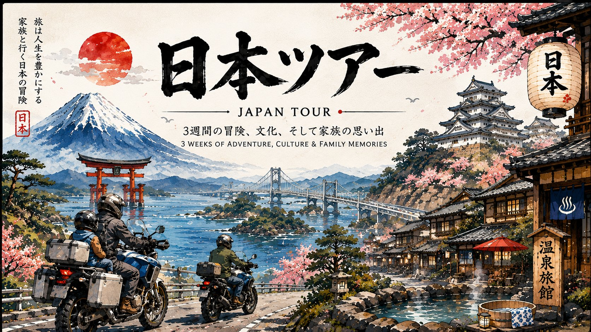

A 16-day guided ADV motorcycle loop, Almaty → Almaty: ≈ 2,800 km across two countries, from the Singing Dune of the Kazakh steppe over a chain of 3,000–4,000 m Tian Shan passes to the glaciers above Issyk-Kul and the nomad yurts of Song-Kol — built as a flexible plan around 5 fixed anchors, with easier/harder route options between them. Built for experienced ADV riders who value beautiful offroad — the roads are the product. Rental Suzuki DR650SE, ride leader, support truck, ~60% asphalt / 40% gravel & dirt.

The tour is designed anchor-first: five ★ anchor nights are pre-booked and non-negotiable, and each pair of anchors is connected by two or more route options trading difficulty and pace — glacier passes vs. coast roads, desert pistes vs. a direct canyon day. The 16-day itinerary is the reference line (the tagged options below); the Day-2 training day is the option-selector, and days freed by faster options become extra anchor nights or weather buffer.
The flex principle: the 16-day frame and the anchor nights are FIXED — the options only trade difficulty and pace. Song-Kol (A4) and the Suek glacier road (S3a) are the weather-dependent cruxes; a buffer day parked at A2 or A3 is what lets the group wait out a storm instead of forcing a 4,000 m pass in snow. When in doubt, take the easier connection — the anchors are guaranteed either way.
The loop with its anchor plan drawn on the ground: ★ anchor markers, smaller waypoint stops, the solid reference route, and the dashed color-coded alternative options. Hover a line to highlight its option card above; click any marker for details.
All eleven stops of the loop in route order. Tap any place for a full page — photos, a map, things to do, regional food and the night's lodging (operator-booked; independent options listed for reference).
Sat Sep 5 → Sun Sep 20, 2026. Distances are the planned legs in kilometres (≈ 2,809 km total); ride times are honest estimates at ~65 km/h on asphalt and ~35 km/h on gravel — several legs are off Google's road graph. Riding days average — in the saddle; the hard block is Days 7–12, split by the Day-8 rest day. Tap any day for its full schedule.
This is a real ADV step-up — the graduation ride after a guided Morocco training tour: longer off-road days, real altitude, remote nights, and two border crossings by bike.
| Tour | "From Desert Up to Glaciers" — custom extended loop edition of Silk Off Road Tours' 10-day route |
| Duration | 16 days (Sep 5–20, 2026): arrival + 14-day tour body (1 training + 12 riding + 1 rest day) + departure |
| Distance | ≈ 2,800 km, Almaty → Almaty (planned legs sum 2,809 km) |
| Terrain | ≈ 60% asphalt / 40% gravel & dirt; highest point 4,021 m |
| Bike | Rental Suzuki DR650SE, third-party insurance included |
| Group | Guided: ride leader + support vehicle; size to confirm |
| Price | Indicative ≈ USD 4,500 (custom edition — confirm; published 10-day tour is USD 3,000 + 500 deposit) |
| Included | Bike, guide, support truck, twin-share lodging, breakfasts, water, entry fees, airport transfers |
| Excluded | Flights, fuel, lunches/dinners, visas, personal insurance, damage liability |